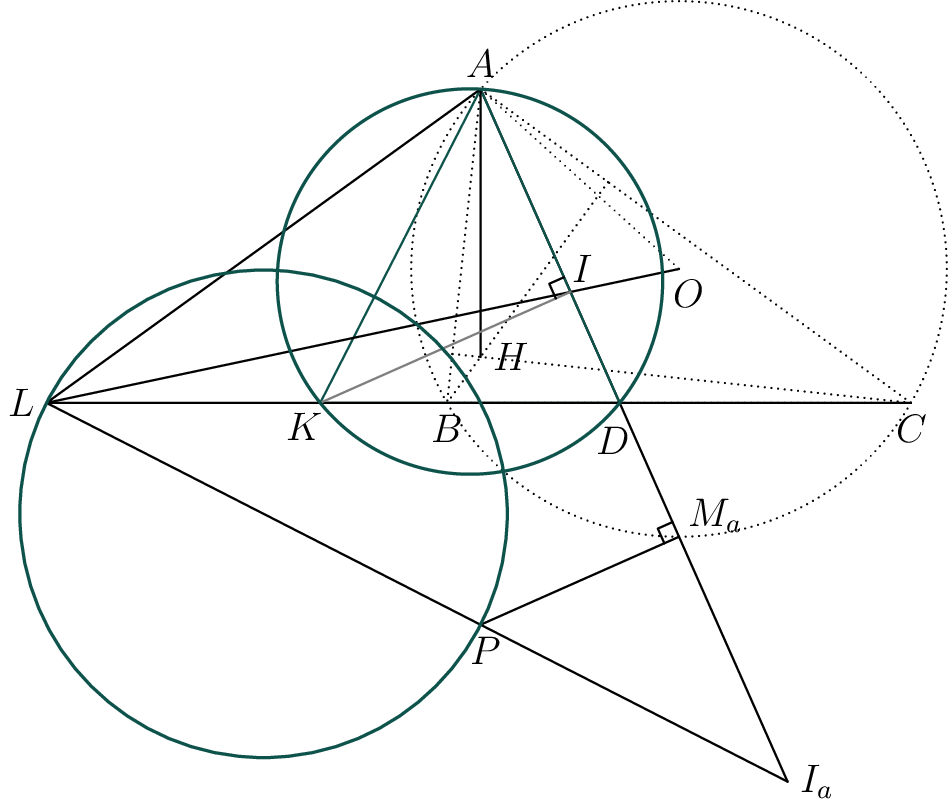

Nyan's Webpage
... up into the sky ...
About
Whoa, hello, welcome to my (unity858's) personal webpage. Appearance is inspired by geometryexplorer.xyz;
Not much is here for now, but some stuff is here now, I guess.

If KA bisects ∠LAH, then
the circle with diameter LP
is orthogonal to the circumcircle of triangle ADK.
(Source: original)
(Source: original)
Oh, and by the way, here's the YEMO 2022 page, and my geo favorites paper.